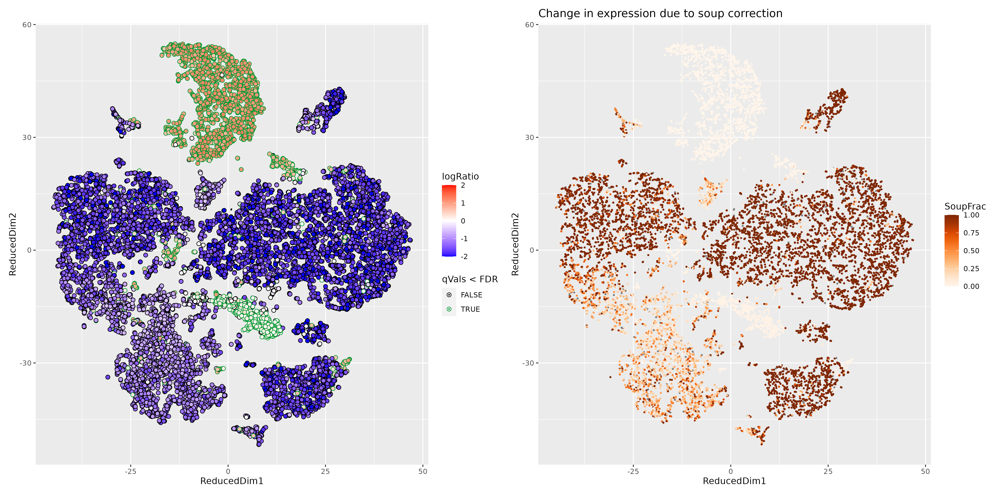

1_Pre-processing.Rmdcalculate_filtering_param is a function that returns the
possible filter thresholds, using the MAD (Median absolute deviation)
statistics. calculate_filtering_param requires a
raw/unfiltered Seurat object, and it returns a table containing the
suggested filters.
NOTE: By Default, it does not apply
the filtering, but this behaviour can be changed by setting
apply = TRUE
library(Seurat)
library(scR)
raw_feature_matrix <- load_10x_gem(rawDIR = "./outs/raw_data/C1", source = "raw", source_type="h5", fixed = FALSE)
unfilt_st <- CreateSeuratObject(counts = raw_feature_matrix, project = "C1")
# Calculate % of MT genes
unfilt_st <- calculate_mito_ribo(unfilt_st, organism = "human")
calculate_filtering_param("C1", unfilt_st, outDIR = "./Samples_QC", apply = FALSE)Ambient RNA contamination can be detected and corrected using the
function estimate_ambient_rna, which is a wrapper to
SoupX.
estimate_ambient_rna("C1","/raw_data/C1", estGenes = NULL, counts2disk = FALSE)The main output is a table with the quantification of the contamination
| SampleID | Contamination.Fraction | Contamination.Level |
|---|---|---|
| C1 | 5 | Low |
| C2 | 10 | Low |
| P1 | 48 | High |
In addition, the function returns the MarkerMap plots of the genes used to estimate the contamination.
